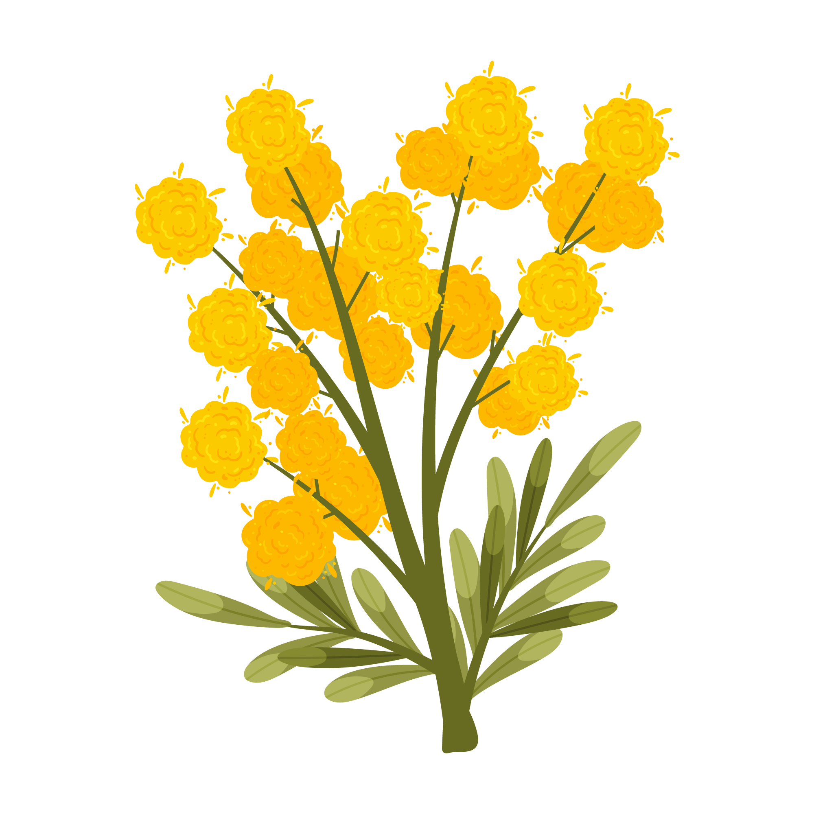

Para ti, Jari
Mi versión de flores amarillas
Dicen que las flores amarillas son las de la alegría. Yo creo que son tus ojitos: llegaron a mi vida como llegas
tú, sin hacer ruido, y lo llenaron todo de alegría.
Cada pétalo de este ramo es una razón para agradecerte: tu risa, tu paciencia y la forma en que haces bonito lo
de todos los días, disculpame si antes no fui muy atento, o consciente de las cosas.
Esta es mi versión de flores amarillas, un ramo que no se marchita y que es solo para ti. Te quiero muchísimo, mi amor. 💛
Haz clic en el corazón 💛